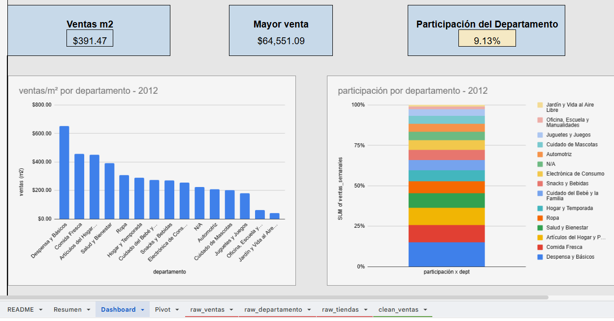
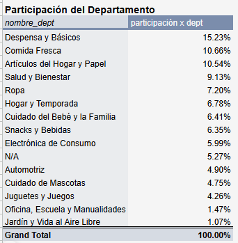
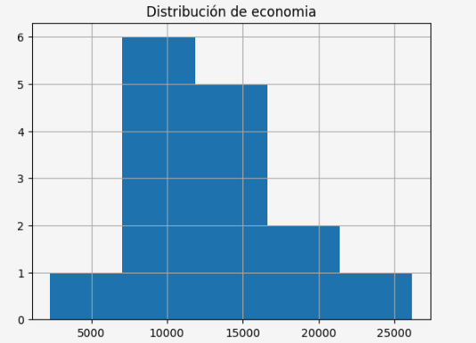
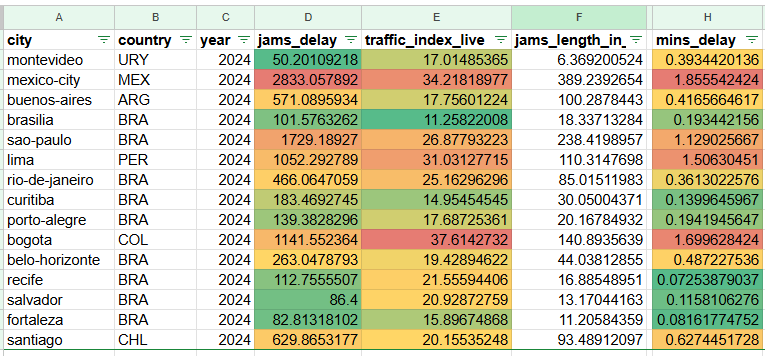
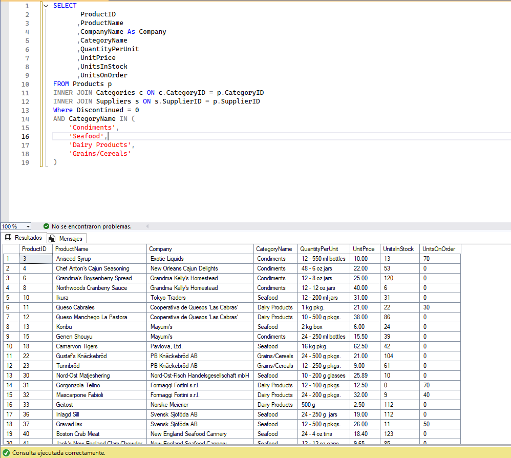

Miguel Angel Guillen Valdez
Analista de Datos | Desarrollador de Software | Diseñador UX/UI
Sobre mi
Desarrollador de software full stack, con conocimiento en el diseño UX y UI. Especialidad en la resolución de problemas por medio de soluciones tecnológicas
3 años de experiencia en la creación de reportes y dashboard interactivos y en tiempo real en entornos industriales y con conocimientos en el desarrollo de aplicaciones web y móvil.
Proyectos
-
Resumen ejecutivo de ventas wallmart - 2012 Enlace

-
El objetivo era conocer las ventas por m² por departamento y su participacion en el periodo del año 2012, para ello se realizo un analisís y se creo un dashboard interactivo
Se utilizo Excel para la manipulacion y creacion de tableros ademas del uso de tablas pivote
- Se decidio crear un dashboard ejecutivo para facilitar a los ejecutivos y al CEO a dar respuestas mas rapidas para cuestiones tipicas como departamento con mas ventas, con menos, impacto, etc.
-
Gracias a la creacion del dashboard se descubrio que el departamento con menos participacion total fue "Jardín y Vida al Aire Libre" logrando solo una participacion del 1.07%, esto quiere decir que se debe tomar medidas y se debe priorizar el presupuesto al departamente con mas participacion que fue Despensas y Básicos obteniendo una participacion del %15.23

-
-
Movilidad urbana y económia en ciudades de LATAM Enlace

-
Su proposito era conocer la relacion que hay entre la movilidad/trafico y su economia
Se aplico el uso de python con la libreria pandas entre otras mas para la limpieza, manipulacion de datos y creacion de graficos. Ademas se uso Excel para la creacion de reportes finales
-
Gracias al uso de python se pudo lograr identificar agrupando los registros por ciudades y se descubrio que su relacion no es lineal, la ciudad que peor economia no siempre era la que tenia mas trafico, esto implica que mayor economia no es igual a mas trafico, la unica ciudad que tuvo la mayor relacion economia - trafico fue Bogota teniendo el peor trafico pero contando con menor economia acomparacion de otras ciudades que no siguen la norma

-
-
Landing page Northwind Enlace

-
El proposito era manipular los datos de la base de datos de Northwind
Se hizo uso de SQL Server para manipular los datos que hay entre las distintas tablas y se creo una landing page para usar esos mismos datos
-
Con los datos se pudo crear una landing page de ejemplo con fines de aprendizaje y retomar practicas simples como el diseño UX/UI y dominio de SQL usando solo lenguajes basicos como HTML y CSS

-